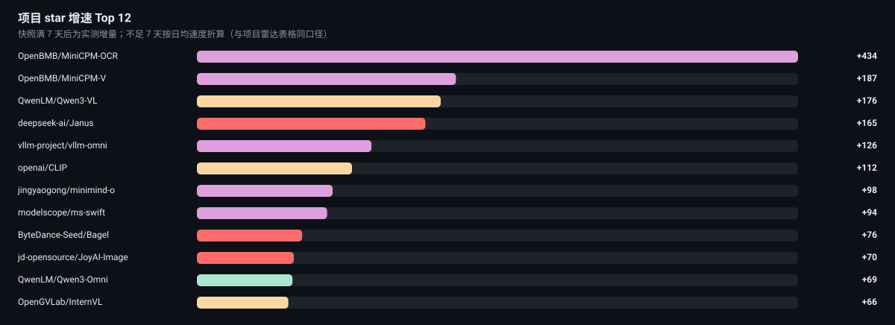

🤖
Native MM
观测台
Observatory
论文库
Papers
周报
Digest
仓库
Repos
谱系
Taxonomy
时间线
Timeline
GitHub ↗
🚀 仓库雷达
Repos
跟踪 82 个仓库，累计 ⭐ 231,661。 默认按 7 日增速排；快照不足一周时用日均折算（≈）。

全部
🔢 图像与视频分词器
🖼️ 统一理解与生成
🌐 任意到任意
🎙️ Omni 实时交互
🧠 预训练底座
按 7 日增速
按 Stars
按名字
加载中…
#
项目
赛道
⭐
7d Δ